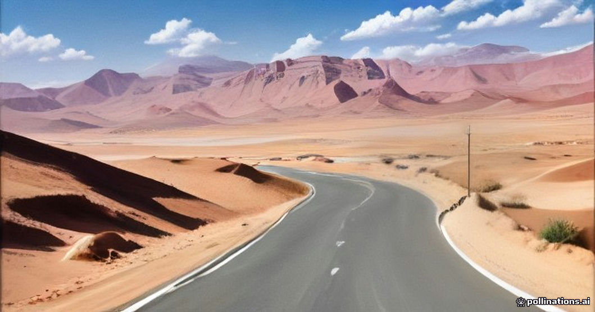

Driving from Marrakesh or Fes toward the Erg Chebbi dunes involves passing several routine road control posts. Police checkpoints to Merzouga are managed by two main authorities: the Sûreté Nationale at town entrances and the Gendarmerie Royale along open highway stretches. For most travelers, these interactions are standard administrative stops meant to monitor traffic flow and maintain regional security.
Whether you are self-driving a rental vehicle or traveling on a transfer, knowing what to expect prevents unnecessary stress. Understanding document requirements, stop signals, and basic road etiquette helps ensure your journey through the High Atlas and southern valleys remains smooth. If you are evaluating transport options, our comparison on comparing self-driving vs private transfers offers broader context on navigating these routes.
Sûreté Nationale vs Gendarmerie Royale
Moroccan road control is split by jurisdiction. The Sûreté Nationale operates inside urban areas and sets up permanent checkpoints at city boundaries, such as the entry and exit points of Ouarzazate, Errachidia, and Midelt. Their officers wear navy blue uniforms and focus primarily on municipal traffic control and identity verification.
The Gendarmerie Royale operates outside towns along national routes like the N9 over the Tizi n'Tichka pass and the N13 through the Ziz Valley. Gendarmes wear grey or royal blue uniforms and monitor vehicle speeds, seatbelt compliance, and cross-provincial transit.
- Sûreté Nationale: Navy uniforms, fixed posts at city limits.
- Gendarmerie Royale: Royal blue/grey uniforms, open highway control and speed radars.
Documents Required for Self-Drivers and Passengers
If you rent a car, officers will ask for your valid driver's license (an international driving permit is helpful but your national license is officially accepted if written in Latin script), the vehicle registration booklet (carte grise), rental contract, and insurance papers. Passports are required for all non-Moroccan occupants.
If you travel with a hired driver or guided company, the driver manages the vehicle papers and commercial transport authorizations. Under official licensed tourist transport regulations, commercial vehicles carry a specific transport permit (autorisation de transport). Officers may still inspect passenger passports occasionally.
Step-by-Step Protocol at Control Posts
When approaching a post, you will see a red circular sign marked 'Halte Gendarmerie' or 'Halte Police'. You must bring your vehicle to a complete stop before the sign. Do not roll through slowly. Wait until the officer explicitly waves you forward with a hand gesture or nod before driving up.
If traveling after dusk, switch your headlights to parking lights (side lights) as you approach so you do not blind the officers. Roll down your front side window and turn on the interior cabin light so the officer can see inside the vehicle.
Speed Radar Traps and Traffic Fines
Speed enforcement is strict along the desert corridors. Gendarmes frequently position mobile laser radar traps 1 to 2 kilometers outside towns where speed limits drop quickly from 100 km/h to 80, 60, or 40 km/h. For more detailed driving advice on the northern route, see our Fes to Merzouga road trip safety guide.
If stopped for speeding, the officer will show you the digital speed reading. Fines are standardized by the national road code (typically 150 to 300 MAD for minor speed infractions). Fines must be paid in cash in Moroccan Dirhams on the spot, and the officer is legally required to issue an official paper receipt (quittance).
| Checkpoint Type | Typical Location | Average Duration | Primary Focus |
|---|---|---|---|
| Town Entry/Exit | Borders of Ouarzazate, Midelt, Errachidia | 1–3 minutes | Identity checks, town traffic compliance |
| Highway Control | Open stretches of N9, N10, and N13 | 1–2 minutes (or waved through) | Speed radar enforcement, seatbelt checks |
| Mountain Junction | Tizi n'Tichka pass & Zad Pass | 2–5 minutes | Weather advisories, heavy transport control |
| Regional Border Post | Approaching Rissani and Merzouga (N13) | 1–4 minutes | Routine passport log near southern border regions |

Illustration, not a photograph — for the real thing, you'll have to stand on the ridge yourself.
Quick answers
A few follow-up questions travelers ask about this.
Do I need to speak French or Arabic at police checkpoints?
No. Officers along tourist routes frequently speak basic English, French, and Spanish. Simple responses stating your destination (e.g., 'Merzouga') and hotel name are usually all that is needed.
What is a 'fiche de renseignement' and do I need one?
A fiche is a small paper form listing your full name, passport number, entry stamp number, nationality, profession, and destination. Carrying 10-15 printed slips per person allows self-drivers to hand them directly to officers, reducing manual log-entry wait times.
What happens if I get a speeding fine on the road to Merzouga?
You must pay the fine in cash in Moroccan Dirham to the officer on duty. The officer will hand you an official paper receipt showing the fine amount and transaction date.
Planning your own route?
Tell us your dates and what matters to you — we'll answer with a straight recommendation, not a brochure.
Send an inquiry See the itineraries